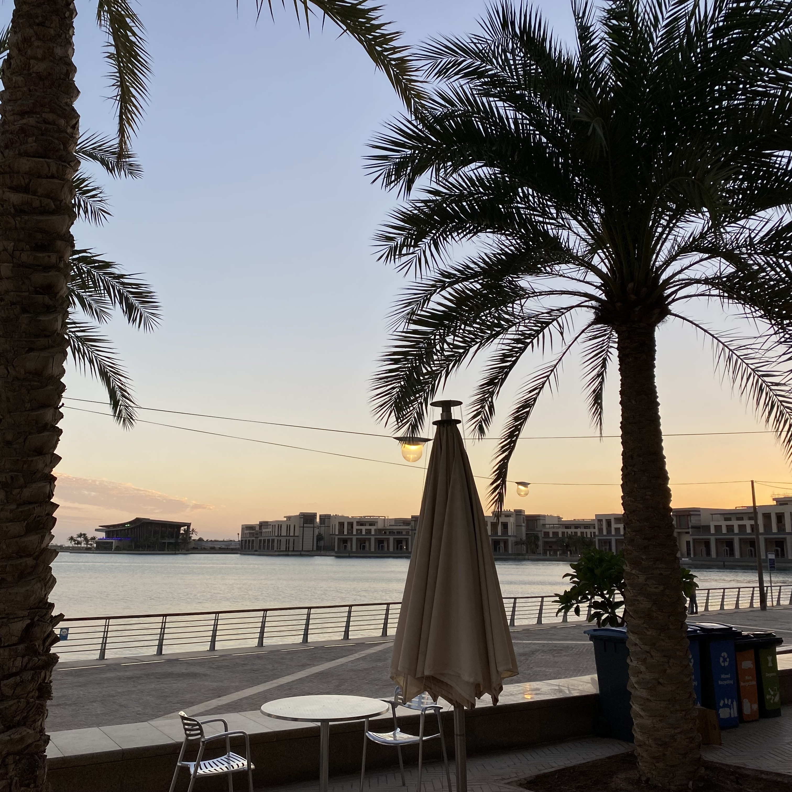
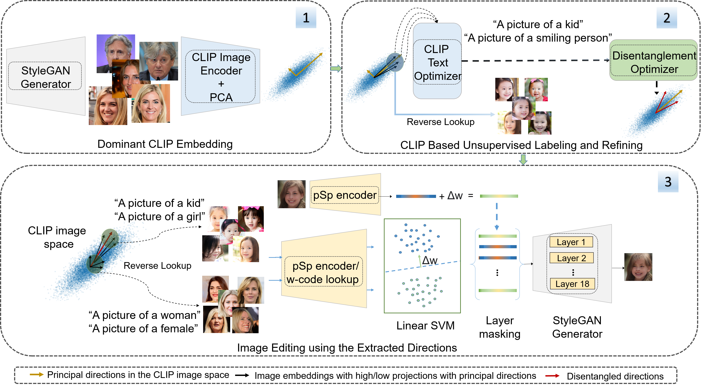
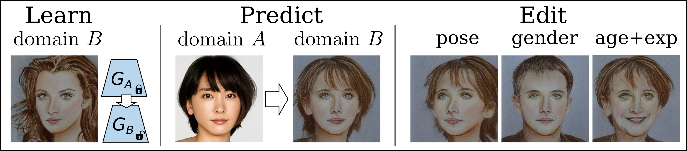
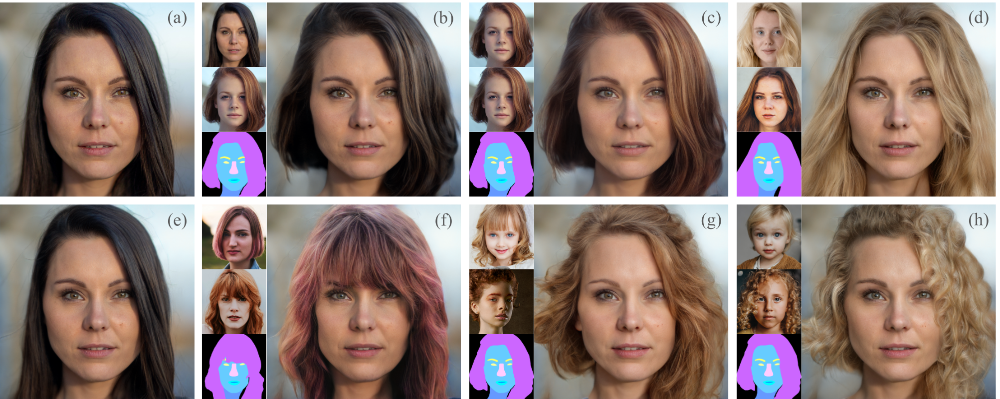
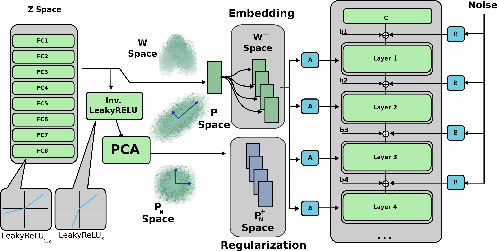
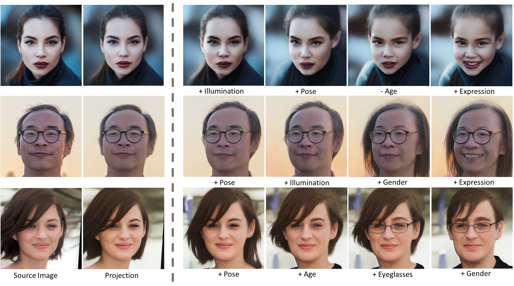
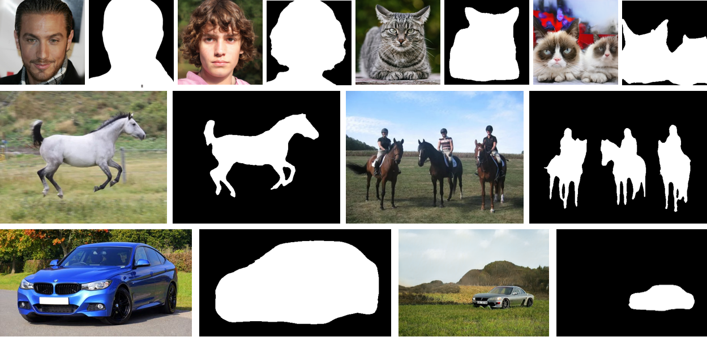
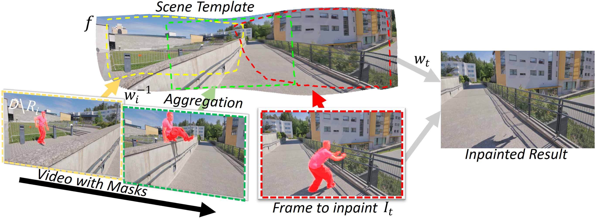
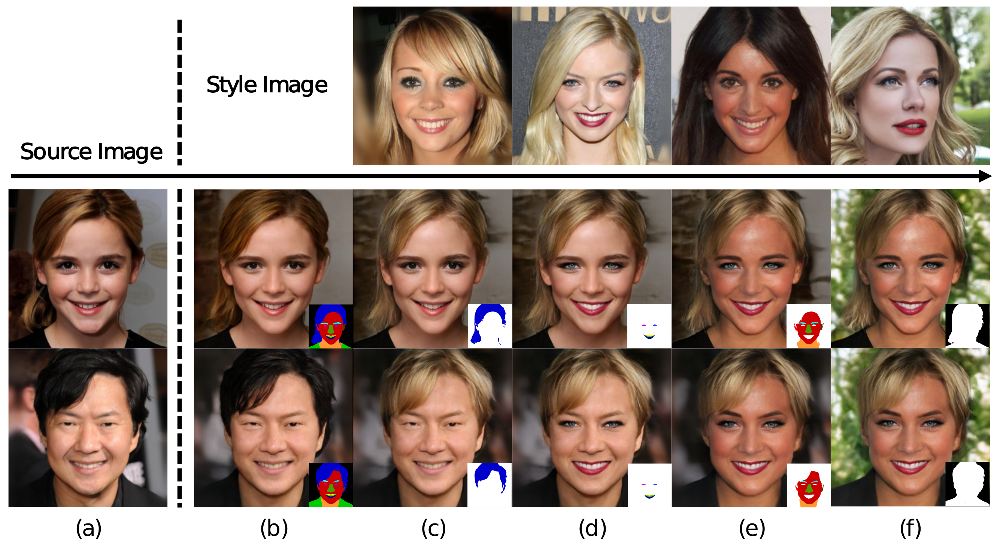
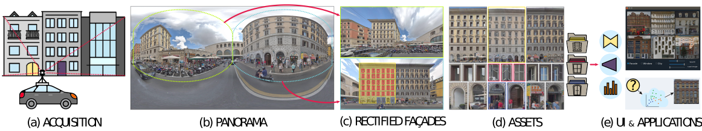

About me
I am a Senior Research Scientist on the ByteDance Doubao (Seed) Team. I completed my Ph.D. in VCC, KAUST, supervised by Prof.Peter Wonka. Before that, I obtained the M.Sc. degree from KAUST, KSA, and the B.Eng. degree from Northeastern University, China. My research focuses on generative AI, particularly diffusion models for video generation. I am also interested in computer graphics and computer vision in general.
You can find my full CV here.

Projects
Dec 2024 - Present
ByteDance Seed Team: PixelDance x Seaweed
Mar 2024 - Nov 2024
ByteDance Seed Team
blog platform promotional video
Publications
2023
Rameen Abdal, Hsin-Ying Lee, Peihao Zhu, Menglei Chai, Aliaksandr Siarohin , Peter Wonka,Sergey Tulyakov
Proc. IEEE Conference on Computer Vision and Pattern Recognition (CVPR), 2023
paper

2022
Peihao Zhu, Rameen Abdal, John Femiani, Peter Wonka
Proc. European Conference on Computer Vision (ECCV), 2022
video

Rameen Abdal ,Peihao Zhu,John Femiani, Niloy J. Mitra,Peter Wonka
SIGGRAPH Conference Proceedings, 2022
paper

Peihao Zhu, Rameen Abdal, John Femiani, Peter Wonka
International Conference on Learning Representations (ICLR), 2022
paper code video

2021
Peihao Zhu, Rameen Abdal, John Femiani, Peter Wonka
ACM Transactions on Graphics (Proc. SIGGRAPH Asia), 2021
paper code video

Peihao Zhu, Rameen Abdal, Yipeng Qin, John Femiani, Peter Wonka
ArXiv pre-print, 2021
paper video

Rameen Abdal, Peihao Zhu, Niloy J. Mitra, Peter Wonka
ACM Transactions on Graphics (TOG), 2021
paper code video

Rameen Abdal, Peihao Zhu, Niloy J. Mitra, Peter Wonka
Proc. IEEE International Conference on Computer Vision (ICCV), 2021
paper code video

Dong Lao, Peihao Zhu, Peter Wonka, Ganesh Sundaramoorthi
Proc. IEEE International Conference on Computer Vision (ICCV), 2021
paper

2020
Peihao Zhu, Rameen Abdal, Yipeng Qin, Peter Wonka
Proc. IEEE Conference on Computer Vision and Pattern Recognition (CVPR Oral), 2020
paper code video

Peihao Zhu, Wamiq Reyaz Para, Anna Fruehstueck, John Femiani, Peter Wonka
IEEE Transactions on Visualization and Computer Graphics (TVCG), 2020
paper code video

Education
Ph.D. in
Computer Science
KAUST, Visual Computing Center
2019 - 2023
M.Sc.
in Computer Science
KAUST, Visual Computing Center
2017 - 2019
B.Eng. in Automation
Northeastern University
2012 -
2016
Work Experience
 Seed Team, ByteDance
Seed Team, ByteDance
Senior Research Scientist
Sep 2024 - present
Seed Team, ByteDance
Research Scientist
Jul 2023 - Aug 2024
 Reality Lab, Meta
Reality Lab, Meta
Research Intern
Oct 2022 - Feb 2023
Creative Vision Lab, Snap
Research Intern
May 2022 - Sep 2022
Contact
Address
Santa Clara, CA, USA
Email
zhupeishishen@gmail.com
Phone
(+1) 4242939085